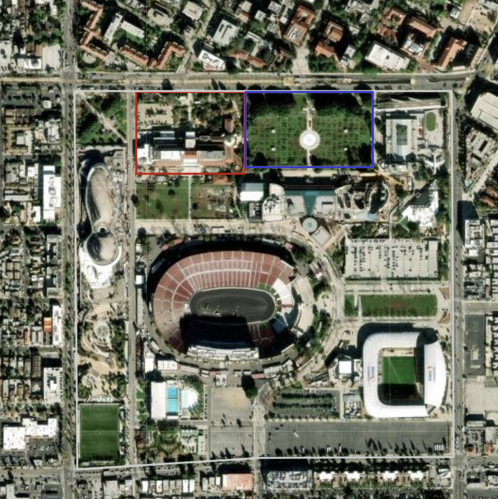
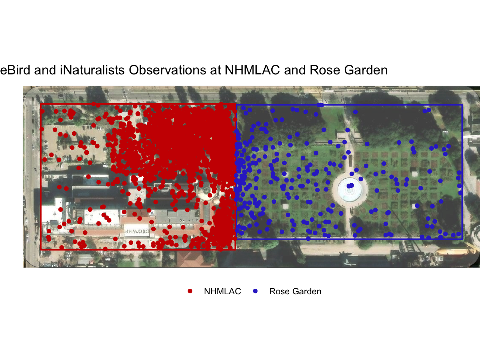
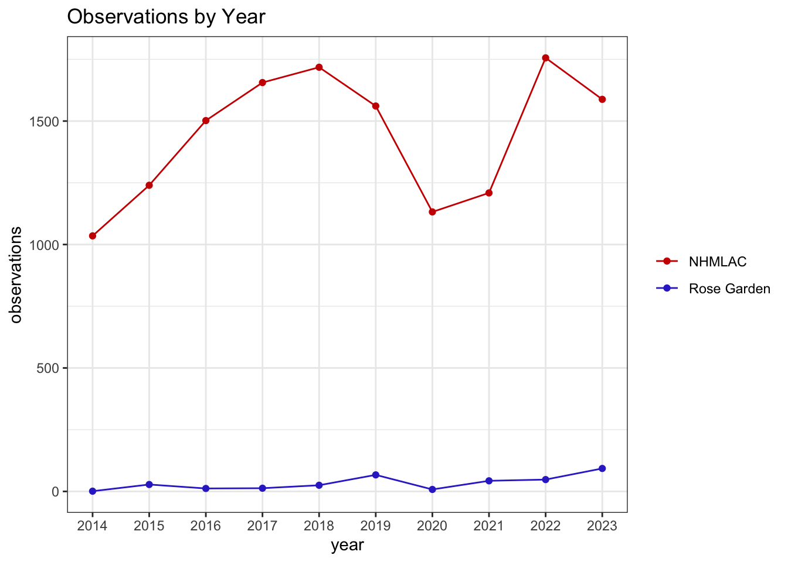
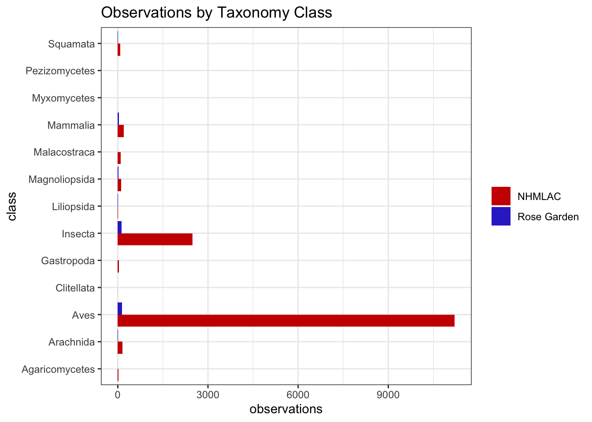
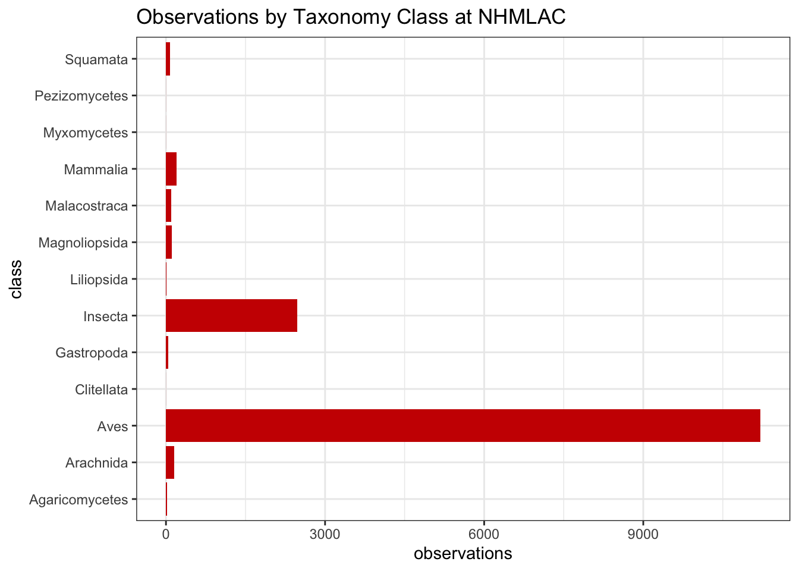
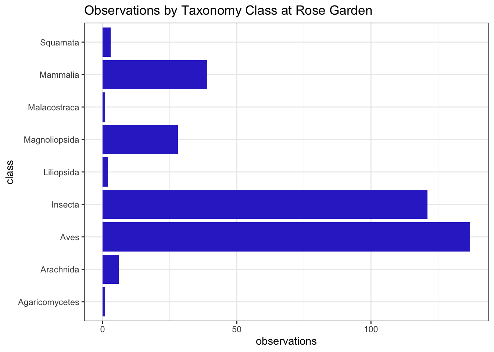
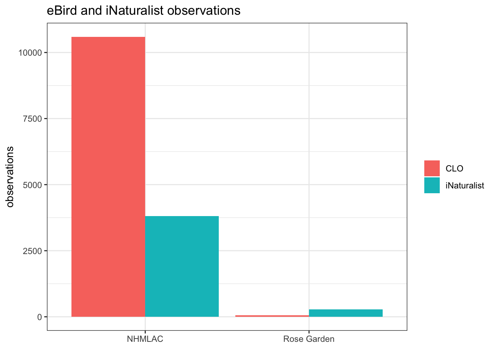
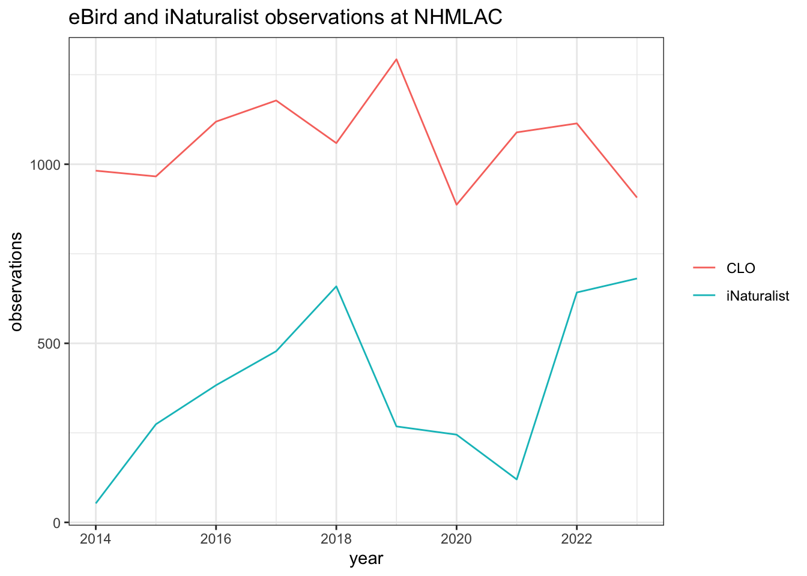
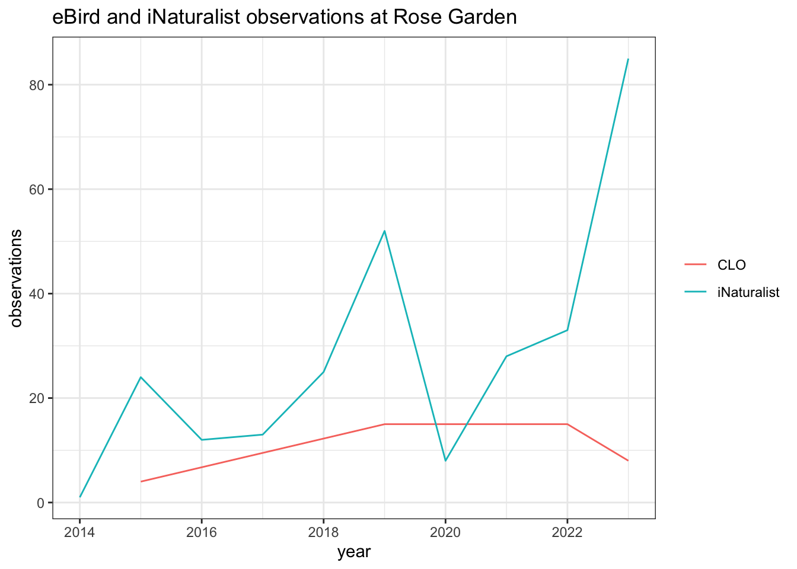

library(readr)
library(dplyr)
library(ggplot2)
library(sf)
library(basemaps)Biodiversity of the Gardens at Exposition Park - Draft
This is a work in progress.
One of the arguments that native plant advocates have for planting native plants is that native plants attract a larger diversity of native wildlife. Exposition Park has two main gardens: Natural History Museum of Los Angeles County Nature Garden, which is full of native plants, and Rose Garden, which is full of roses and lawn grass. The NHM Nature Gardens and the Rose Garden could be a good test case to compare the effect of native plants on biodiversity.

Map: Leaflet | Tiles © Esri — Source: Esri, i-cubed, USDA, USGS, AEX, GeoEye, Getmapping, Aerogrid, IGN, IGP, UPR-EGP, and the GIS User Community
nhm_color <- '#cc0000'
rose_color <- '#3333cc'GBIF data
I’m using iNaturalist and eBird (Cornell Lab of Ornithology) data from 2014 to 2023 at Natural History Museum of Los Angeles County and Rose Garden that I downloaed from GBIF.org. I did some basic cleaning of the GBIF data.
gbif_df <- read_csv('../data/processed/gbif_gardens.csv')gbif_nhm_df <- gbif_df |>
filter(place == 'NHMLAC')
gbif_rose_df <- gbif_df |>
filter(place == 'Rose Garden')There are 14,735 iNaturalist and eBird observations for the NHM and the Rose Garden between 2014 and 2023.
dim(gbif_df)[1] 14735 51Despite the Rose Garden being a much bigger garden, NHM has 14,397 observations, while the Rose Garden has 338. NHM has 42 times more observations than the Rose Garden!
table(gbif_df$place)
NHMLAC Rose Garden
14397 338 Map of observations
rose_sf <- sf::st_read('../data/raw/rose_garden.geojson')
nhm_sf <- sf::st_read('../data/raw/nhm.geojson')gbif_sf <- gbif_df %>%
st_as_sf(coords = c("decimalLongitude", "decimalLatitude"), crs = 4326)rose_3857_sf <- st_transform(rose_sf, crs = st_crs(3857))
nhm_3857_sf <- st_transform(nhm_sf, crs = st_crs(3857))
gbif_3857_sf <- st_transform(gbif_sf, crs = st_crs(3857))
bbox_sf <- rbind(rose_3857_sf, nhm_3857_sf) |>
st_bbox() |>
st_as_sfc() |>
st_buffer(dist=25)This map shows the observations at NHM and the Rose Garden.
set_defaults(map_service = "esri", map_type = "world_imagery")
# set_defaults(map_service = "carto", map_type = "voyager")
ggplot() +
basemap_gglayer(bbox_sf) +
geom_sf(data = bbox_sf, fill=alpha('white', .25)) +
geom_sf(data = rose_3857_sf, color = rose_color,
fill = "transparent", linewidth = .75) +
geom_sf(data = nhm_3857_sf, color = nhm_color,
fill = "transparent", linewidth = .75) +
geom_sf(data = gbif_3857_sf, mapping=aes(color=place)) +
scale_fill_identity() +
scale_color_manual(values=c(nhm_color, rose_color)) +
theme_void() +
theme(legend.position = "bottom",
legend.title = element_blank()) +
ggtitle("eBird and iNaturalists Observations at NHMLAC and Rose Garden")Loading basemap 'world_imagery' from map service 'esri'...
Compare observations by year
Comparison of the NHM and Rose Garden observations by year. There was a big dip in the number of observations at NHM during the peak of COVID.
year_df <- gbif_df |>
count(place, year, name="observations")
ggplot(data=year_df, mapping=aes(x=year, y=observations, color=place)) +
scale_color_manual(values=c(nhm_color, rose_color))+
geom_line() +
geom_point()+
scale_x_continuous(n.breaks=10) +
theme_bw() +
theme( panel.grid.minor.x = element_blank(),
legend.title = element_blank()) +
labs(title="Observations by Year")
Observations at NHM per year.
gbif_nhm_df |>
count(year, name="observations")| year | observations |
|---|---|
| 2014 | 1035 |
| 2015 | 1240 |
| 2016 | 1502 |
| 2017 | 1656 |
| 2018 | 1718 |
| 2019 | 1561 |
| 2020 | 1132 |
| 2021 | 1209 |
| 2022 | 1756 |
| 2023 | 1588 |
Observations at Rose Garden per year. All that green space, but couldn’t get over 100 observations per year.
gbif_rose_df |>
count(year, name="observations")| year | observations |
|---|---|
| 2014 | 1 |
| 2015 | 28 |
| 2016 | 12 |
| 2017 | 13 |
| 2018 | 25 |
| 2019 | 67 |
| 2020 | 8 |
| 2021 | 43 |
| 2022 | 48 |
| 2023 | 93 |
Compare observations by taxonomy class
Comparison of the number of observations based on taxonomy classes. So. Many. Birds.
ggplot(data=gbif_df, mapping=aes(y=class, fill=place)) +
scale_color_manual(values=c(nhm_color, rose_color),
aesthetics = c("colour", "fill"))+
geom_bar( position = position_dodge(preserve = 'single')) +
theme_bw() +
theme(legend.title = element_blank()) +
ggtitle("Observations by Taxonomy Class") +
labs(x="observations")
Fourteen taxa classes are observed at NHM. Birds (Aves) are the most observed class by a big margin (11,212 observations). Insects (Insecta) are the second most observed class (2,479 observations).
ggplot(data=gbif_nhm_df, mapping=aes(y=class)) +
geom_bar( fill=nhm_color) +
theme_bw() +
ggtitle("Observations by Taxonomy Class at NHMLAC") +
labs(x="observations")
gbif_nhm_df |>
count(class, name="observations")| class | observations |
|---|---|
| Agaricomycetes | 17 |
| Arachnida | 153 |
| Aves | 11212 |
| Clitellata | 1 |
| Gastropoda | 41 |
| Insecta | 2479 |
| Liliopsida | 5 |
| Magnoliopsida | 113 |
| Malacostraca | 98 |
| Mammalia | 200 |
| Myxomycetes | 1 |
| Pezizomycetes | 1 |
| Squamata | 76 |
Nine taxa classes are observed at the Rose Garden. Birds and insects are also the most commonly observed classes, though there is only a small difference between the number of bird and insect observations (137 bird observationss, 125 insect observations).
ggplot(data=gbif_rose_df, mapping=aes(y=class)) +
geom_bar(fill=rose_color) +
theme_bw() +
ggtitle("Observations by Taxonomy Class at Rose Garden") +
labs(x="observations")
gbif_rose_df |>
count(class, name="observations")| class | observations |
|---|---|
| Agaricomycetes | 1 |
| Arachnida | 6 |
| Aves | 137 |
| Insecta | 121 |
| Liliopsida | 2 |
| Magnoliopsida | 28 |
| Malacostraca | 1 |
| Mammalia | 39 |
| Squamata | 3 |
Unique species
Comparison of the number of species observed. NHM has 441 species while the Rose Garden has 100. NHM has 4 times the number of species as the Rose Garden. Keep in mind NHM has 42 times the number of observations.
gbif_nhm_df |>
select(verbatimScientificName) |>
unique() |>
nrow()[1] 441gbif_rose_df |>
select(verbatimScientificName) |>
unique() |>
nrow()[1] 100Number of species by taxa class at NHM. Even though though there far more bird observations than insect observations, there are more insect species than bird species (240 insect species vs 136 bird species).
gbif_nhm_df |>
select(verbatimScientificName, class) |>
unique() |>
count(class, name="species")| class | species |
|---|---|
| Agaricomycetes | 7 |
| Arachnida | 19 |
| Aves | 132 |
| Clitellata | 1 |
| Gastropoda | 10 |
| Insecta | 201 |
| Liliopsida | 4 |
| Magnoliopsida | 54 |
| Malacostraca | 1 |
| Mammalia | 6 |
| Myxomycetes | 1 |
| Pezizomycetes | 1 |
| Squamata | 4 |
Number of species by taxa class at Rose Garden. Rose garden has 37 bird species and 36 insect species.
gbif_rose_df |>
select(verbatimScientificName, class) |>
unique() |>
count(class, name="species")| class | species |
|---|---|
| Agaricomycetes | 1 |
| Arachnida | 3 |
| Aves | 37 |
| Insecta | 36 |
| Liliopsida | 2 |
| Magnoliopsida | 16 |
| Malacostraca | 1 |
| Mammalia | 3 |
| Squamata | 1 |
iNaturalist vs eBird
Comparison of the number of iNaturalist and eBird (CLO) observations. NHM has more eBird observations than iNaturalist observations. Rose Garden has more iNaturalist observations than eBird observations. It is surprising to see so few eBird observations at the Rose Garden. It is as if birders are purposefully avoiding the Rose Garden.
ggplot(data=gbif_df,
mapping=aes(x=place, fill=institutionCode)) +
geom_bar( position = position_dodge(preserve = 'single')) +
theme_bw() +
theme(legend.title = element_blank()) +
labs(y="observations", x=element_blank()) +
ggtitle("eBird and iNaturalist observations") 
eBird and iNaturalist observations at NHM.
gbif_nhm_platform_df <- gbif_nhm_df |>
count(year, institutionCode, name="observations")
ggplot(data=gbif_nhm_platform_df,
mapping=aes(x=year, y=observations, color=institutionCode)) +
geom_line() +
theme_bw() +
theme(legend.title = element_blank()) +
ggtitle("eBird and iNaturalist observations at NHMLAC") 
eBird and iNaturalist observations at Rose Garden.
gbif_rose_platform_df <- gbif_rose_df |>
count(year, institutionCode, name="observations")
ggplot(data=gbif_rose_platform_df,
mapping=aes(x=year, y=observations, color=institutionCode)) +
geom_line() +
theme_bw() +
theme(legend.title = element_blank()) +
ggtitle("eBird and iNaturalist observations at Rose Garden")
Most observed species
common_names <- read_csv('../data/processed/ncbi_common_names.csv')Top ten most observed species at NHM. All top ten species are birds since eBird has more observations than than iNaturalist at NHM.
gbif_nhm_df |>
count(class, verbatimScientificName,name="observations") |>
arrange(desc(observations)) |>
slice(1:10) |>
left_join(common_names,
by=c('verbatimScientificName'='name')) | class | verbatimScientificName | observations | common_name |
|---|---|---|---|
| Aves | Haemorhous mexicanus | 763 | house finch |
| Aves | Passer domesticus | 716 | house sparrow |
| Aves | Spinus psaltria | 688 | lesser goldfinch |
| Aves | Selasphorus sasin | 682 | Allen’s hummingbird |
| Aves | Psaltriparus minimus | 586 | Bushtit |
| Aves | Mimus polyglottos | 569 | Northern mockingbird |
| Aves | Zenaida macroura | 551 | mourning dove |
| Aves | Sayornis nigricans | 513 | black phoebe |
| Aves | Columba livia | 510 | rock pigeon |
| Aves | Larus occidentalis | 409 | western gull |
Top ten most observed species at Rose Garden. Wider variety of top ten species than NHM since iNaturalist has more observations than eBird.
gbif_rose_df |>
count(class, verbatimScientificName, name="observations") |>
arrange(desc(observations)) |>
slice(1:10) |>
left_join(common_names, by=c('verbatimScientificName'='name'))| class | verbatimScientificName | observations | common_name |
|---|---|---|---|
| Mammalia | Sciurus niger | 36 | fox squirrel |
| Insecta | Cotinis mutabilis | 27 | figeater beetle |
| Aves | Sayornis nigricans | 22 | black phoebe |
| Insecta | Apis mellifera | 20 | honey bee |
| Aves | Passer domesticus | 17 | house sparrow |
| Insecta | Danaus plexippus | 12 | monarch butterfly |
| Aves | Selasphorus sasin | 10 | Allen’s hummingbird |
| Aves | Haemorhous mexicanus | 7 | house finch |
| Aves | Mimus polyglottos | 7 | Northern mockingbird |
| Aves | Buteo jamaicensis | 6 | red-tailed hawk |
Top ten most observed species at NHM for iNaturalist.
gbif_nhm_df |>
filter(institutionCode=='iNaturalist') |>
count(class, verbatimScientificName, name="observations") |>
arrange(desc(observations)) |>
slice(1:10) |>
left_join(common_names, by=c('verbatimScientificName'='name'))| class | verbatimScientificName | observations | common_name |
|---|---|---|---|
| Insecta | Apis mellifera | 272 | honey bee |
| Mammalia | Sciurus niger | 183 | fox squirrel |
| Insecta | Danaus plexippus | 172 | monarch butterfly |
| Insecta | Hylephila phyleus | 117 | fiery skipper |
| Malacostraca | Armadillidium vulgare | 98 | common pillbug |
| Aves | Selasphorus sasin | 97 | Allen’s hummingbird |
| Aves | Haemorhous mexicanus | 81 | house finch |
| Insecta | Allograpta obliqua | 79 | oblique streaktail |
| Insecta | Schistocerca nitens | 76 | vagrant locust |
| Aves | Spinus psaltria | 74 | lesser goldfinch |
Top ten most observed species at Rose Garden for iNaturalist.
gbif_rose_df |>
filter(institutionCode=='iNaturalist') |>
count(class, verbatimScientificName, name="observations") |>
arrange(desc(observations)) |>
slice(1:10) |>
left_join(common_names, by=c('verbatimScientificName'='name'))| class | verbatimScientificName | observations | common_name |
|---|---|---|---|
| Mammalia | Sciurus niger | 36 | fox squirrel |
| Insecta | Cotinis mutabilis | 27 | figeater beetle |
| Insecta | Apis mellifera | 20 | honey bee |
| Aves | Sayornis nigricans | 13 | black phoebe |
| Aves | Passer domesticus | 12 | house sparrow |
| Insecta | Danaus plexippus | 12 | monarch butterfly |
| Aves | Buteo jamaicensis | 6 | red-tailed hawk |
| Insecta | Harmonia axyridis | 6 | Asian lady beetle |
| Insecta | Hylephila phyleus | 6 | fiery skipper |
| Aves | Columba livia domestica | 5 | rock pigeon |
Thoughts
I assumed there would be more observations at the NHM than Rose Garden because the museum has an active community science program and education department. But I did not expect the difference to be 14K to 400.
I’m a community scientists who likes to dabble with iNaturalist data. I wonder how scientists who study this stuff for a living normalizes eBird and iNaturalist data.
With such a lopsided number of observations, it is hard to determine if the difference in number of taxa found at the two places is due to a difference in the biodiversity or due to the number of people making observations. I think it would be cool if there were iNaturalist and eBird events at same time with equal number of participants at the two locations to get data about the biodiversity of the two gardens.
NHM Nature Garden is a small patch of greenspace in a very urban setting that is full of people on a daily basis. Yet it still has over 14K eBird and iNaturalist observations and 400 observed species. I think it would be cool if other small green spaces owned by local governments would follow this model of including native plants to promote biodiversity.